La app de la música en directo: artistas, técnicos, salas, equipo y el cancionero del músico, en un solo sitio. Empezamos en Barcelona.
Presentación para inversores · octubre de 2026 · musikeeo.com
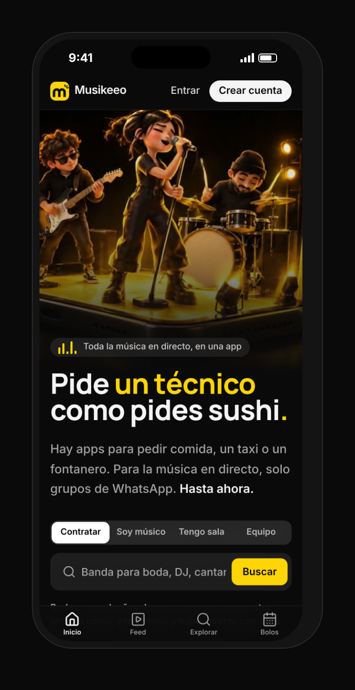
Una boda, un bar o una sala no sabe a quién llamar ni cuánto cuesta. Pregunta en grupos y espera.
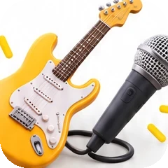
Viven del boca a boca. Una baja de última hora se arregla a base de mensajes y favores.
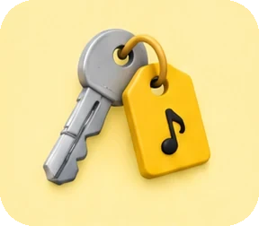
Un cable, una correa o un PA para esta noche: las tiendas cerradas y Wallapop a 40 minutos.
Hoy todo está repartido entre WhatsApp, Instagram, Wallapop, bodas.net y el boca a boca. Nadie lo junta.
Tres tiendas cerradas y nadie en el bar con una. Acabé tocando con el cinturón de seguridad del coche de mi madre como correa. Con Musikeeo, un músico a 600 metros me la habría alquilado en diez minutos.
Víctor Torres · músico de bolos y fundador
| El problema | A quién le pasa | Un caso | Qué hace Musikeeo | |
|---|---|---|---|---|
| 1 | Los novios no saben de quién fiarse | 175.364 bodas al año en España; el 87 % contrata DJ | Pagan la señal por Bizum a una banda que encontraron en Instagram y, a dos semanas de la boda, no contesta. | YaVídeos en el perfil y la propuesta por escrito. En caminoReseñas solo de bolos hechos y garantía: sustituto o se devuelve todo. |
| 2 | El bar se queda sin música el viernes | 163.491 bares en España; nadie ha medido cuántos tienen directo | Jueves, 15:00: cancela el trío de jazz y esa noche hay mesas reservadas. | YaPublica el bolo y le llegan postulaciones de músicos de la zona. En camino«SOS sustituto». |
| 3 | Al músico le sobra talento y le faltan bolos | La mayoría gana unos 7.000 € al año; el 35 % trabaja sin contrato | Vive del boca a boca y de un par de grupos de WhatsApp: si no le llaman, no toca. | YaUn perfil que trabaja por él y bolos a los que postularse gratis. |
| 4 | Cobrar tarde, o no cobrar | Músicos y técnicos que viven de bolos | «Te pago la semana que viene», que acaba siendo dos meses. O nunca. | En caminoReserva protegida: el dinero está guardado antes del bolo y llega 48 horas después. |
| 5 | Falta algo a última hora | Cualquiera que toque esta noche | Sábado, 21:30: se rompe la correa y hay tres tiendas cerradas. Le pasó a Víctor. | YaAlquiler entre músicos en el Mercado. En caminoEl mapa de los musikeers que tienes cerca. |
Fuentes: INE (2024) · bodas.net, Informe del Sector Nupcial 2026 · Hostelería de España (2024) · Unión de Músicos y SGAE (2022). Los casos son situaciones típicas del sector, salvo los de Víctor, que son reales.
| El problema | A quién le pasa | Un caso | Qué hace Musikeeo | |
|---|---|---|---|---|
| 6 | El técnico con el equipo parado | Técnicos a 150-250 € la jornada; un equipo de sonido se alquila a 300-500 € el día | Su equipo de sonido solo sale los sábados; entre semana, parado. | YaPerfil de técnico, alquiler de equipo y bolos que piden sonido. |
| 7 | La sala que busca telonero | Unas 300 salas con programación estable en España | Una gira pasa por Barcelona en diez días y le falta un grupo para abrir. | YaBuscar por estilo, ver vídeos y proponer fecha y caché en el chat. |
| 8 | Contratar en regla es un lío | Empresas, hoteles, bares y músicos que no son autónomos | Una empresa quiere un grupo para su cena del Mobile World Congress y exige factura. | En caminoFactura hecha, cobro en nombre del artista y, en el Plan Sala, las altas con una gestoría. |
| 9 | El repertorio, en papeles y cinco apps | Todo músico que toca versiones | Boda del 24 de octubre: 53 temas que estaban en documentos sueltos, en una sola pantalla para tocar. Era el bolo de Víctor. | YaEl Cancionero: tono, cejilla, pedal y sin cobertura. Gratis. |
| 10 | Todo está repartido | Quien organiza un evento | Para una boda: banda, DJ, técnico y equipo, en cuatro webs y diez chats. | YaTodo en una app, y Rodrigo (IA) prepara el bolo o el perfil en un minuto. |
Fuentes: Cronoshare (2026) · ACCES. «Ya»: funciona hoy en musikeeo.com. «En camino»: siguiente fase, con pagos protegidos.
GigPig (Reino Unido) lleva más de 120.000 bolos en bares desde 2023, con más de 3.000 locales. Encore cobra un 20 % por músicos de boda. CeolConnect (Irlanda) cobra a los locales de 159 a 499 € al mes.
Ultimate Guitar cobra 39,99 € al año por acordes y repertorios. Wallapop sacó en 2024 el 73 % de sus ingresos de la protección al comprador.
Treatwell cobra solo el cliente nuevo y deja repetir gratis. Airbnb esconde el teléfono hasta reservar: Musikeeo ya lo esconde en el chat hasta aceptar la propuesta.
En producción en musikeeo.com, sin descargar nada y también sin cobertura. El Cancionero ya se ha usado en una boda real.
El fundador es músico de bolos en Barcelona: sabe a quién llamar, y 20-30 perfiles reales de su red están listos para empezar.
En 5.000 futuros simulados, el año 5 pierde dinero solo en un 4 % de los casos. Rentable si conseguir unos novios cuesta 50 € o menos.
Fuentes: Record of the Day (feb-2026) · Encore, ayuda (nov-2025) · Hot Press (2026) · App Store (2026) · Ara (2025) · Treatwell, precios (2026) · modelo_consejo.py.
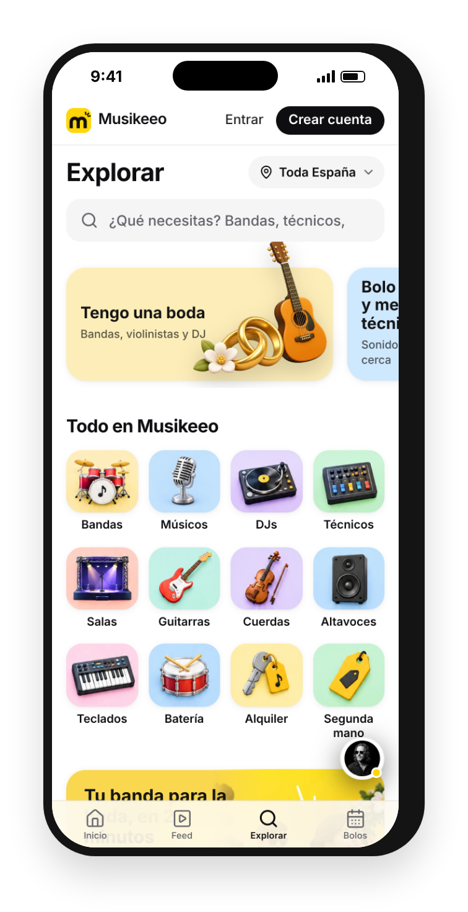
ExplorarBandas, DJs, técnicos, salas y equipo cerca de ti.
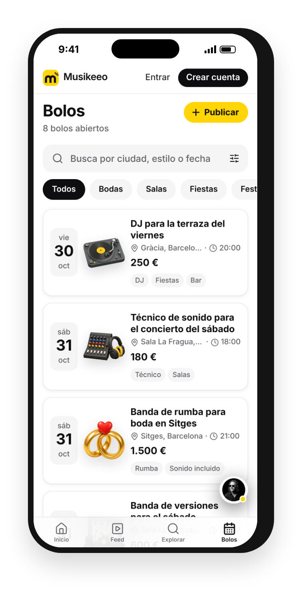
BolosPublicas tu bolo y te llegan propuestas.
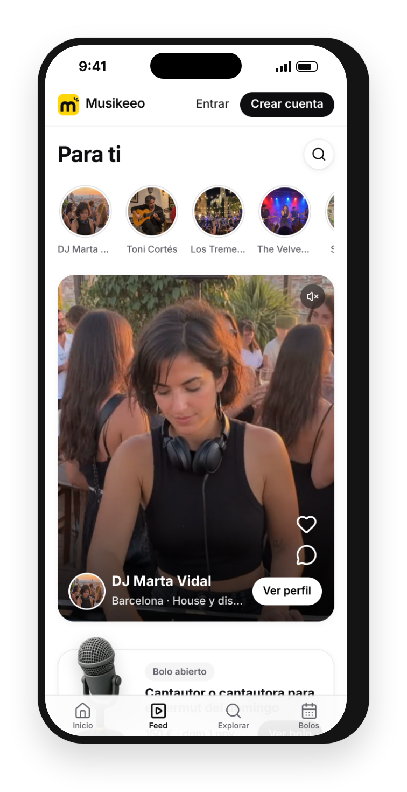
Feed «Para ti»Vídeos y fotos de artistas, con me gusta y comentarios.
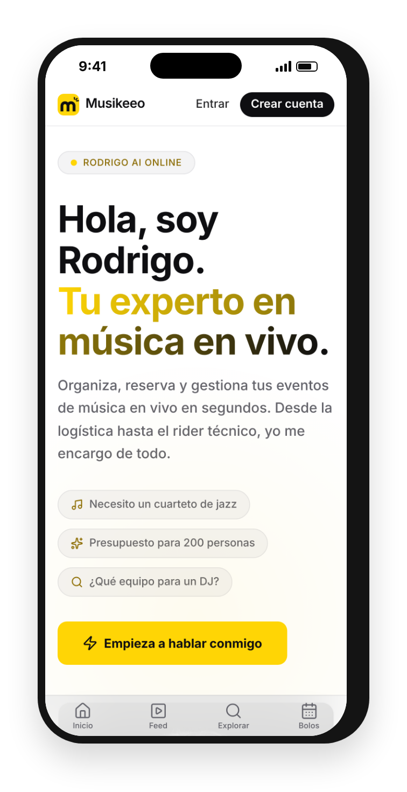
Rodrigo, IAPrepara anuncios, bolos y perfiles. Publicas tú.
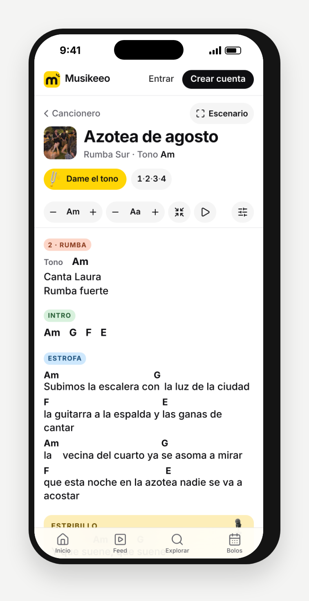
En tu tonoLetra y acordes limpios, con cejilla.
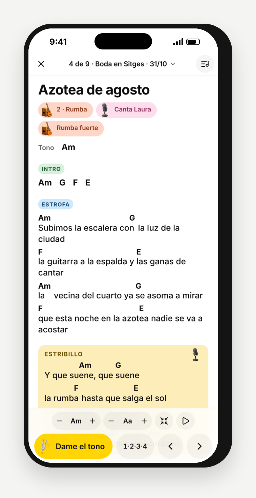
TocarEl repertorio del bolo, deslizando o con pedal. Sin cobertura.
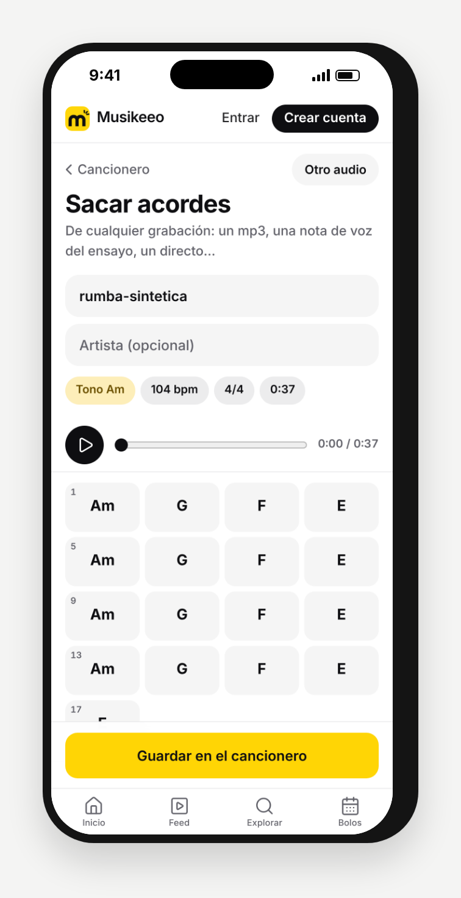
Sacar acordesEl móvil escucha una grabación y te dice los acordes.
Un músico no entra cada día en un marketplace, pero sí en su cancionero. El Cancionero trae al músico; la red hace el resto.
Víctor lo usó en su bolo del 24 de octubre: una boda con 53 temas.
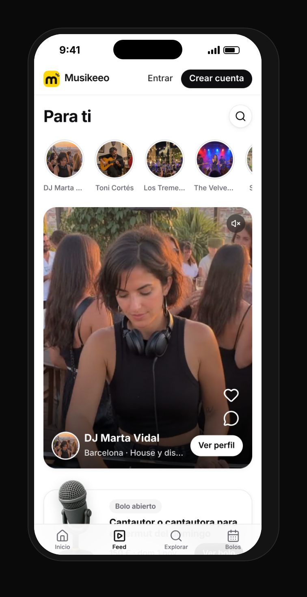
de acierto ordenando por fecha, como estaba antes.
con el algoritmo nuevo tras 14 días (el máximo posible era un 36 %).
Simulación con 8 perfiles de agentes durante 14 días, no con usuarios reales. Detalle en docs/SIMULACION-FEED.md.
en entradas de música en directo en España en 2025. Récord, un 11 % más que el año anterior.
bodas en España en 2024. El 87 % de las parejas contrata DJ.
conciertos de música popular en 2024, un 9,4 % más.
Y la IA ya permite que publicar un bolo o un perfil cueste un minuto: Rodrigo lo prepara y la persona solo pulsa «Publicar».
Fuentes: APM vía El Debate y Euronews (abr-2026) · INE, Movimiento Natural de la Población 2024 · bodas.net, Informe del Sector Nupcial 2026 · Anuario SGAE vía que.es (nov-2025)
bodas al año
con música
de música por boda
al año
con un 12 %
En Cataluña, donde empezamos: 27.836 bodas × 87 % × 748 € ≈ 18 M€ al año, y un 12 % son unos 2,2 M€.
en España. Cuántos programan directo está por medir.
con programación regular de directo.
en Cataluña en 2025, muchos en fiestas mayores.
13.367 M€ en reuniones y eventos (2023).
Estimación propia con datos de INE e Idescat (2024), bodas.net (gasto medio en música), Hostelería de España, ACCES, Anuario de la Música 2026 y Braintrust. Se valida con el piloto de Barcelona.
Gestión y garantía que paga el cliente, con el IVA en el precio final. El músico cobra el 100 % de su caché. Un 10 % los seis primeros meses.
Solo la primera vez con cada artista. Repetir es gratis.
Bolos ilimitados y una sola factura al mes con todos los artistas.
Facturas, estadísticas y el Cancionero Pro (24,99 €/año suelto).
Tiendas desde 49 €/mes; destacar un anuncio, desde 1,99 €.
Lo que deja cada contratación
| Bolo | Caché | Gestión | Nos queda |
|---|---|---|---|
| Boda | 800 € | 96 € + IVA | 65,51 € |
| Sala o empresa, 1.ª vez | 1.000 € | 100 € + IVA | 97,88 € |
| Bar, 1.ª vez | 220 € | 22 € + IVA | 21,29 € |
| Bar que repite | 220 € | 0 € | Plan Sala |
Ya descontados el cobro con tarjeta y Stripe y, en las bodas, un fondo de garantía del 1 % y la atención al cliente. Lanzamos sin cobrar: primero que haya bolos. Como referencia, Encore cobra un 20 % y GigSalad entre un 12,5 y un 17 %.
| Quién | Qué hace | Cómo cobra |
|---|---|---|
| GigSalad · EE. UU. | Artistas para eventos | 10-12 % al cliente y 2,5-5 % al artista |
| Encore · Reino Unido | Músicos para bodas y eventos | 20 % con IVA al contratar |
| GigPig · Reino Unido | Música en directo para bares y pubs | Paga el local · ronda seed de 1,3 M£ en 2024 |
| bodas.net · España | Directorio de proveedores de boda | Suscripción y publicidad del proveedor |
| WhatsApp y Wallapop | Todo lo demás, a mano | Gratis, sin perfiles ni garantías |
| Musikeeo · España | Artistas, técnicos, salas, equipo, cancionero e IA | 12 % en bodas, 10 % la primera vez en locales (repetir, gratis) y suscripciones |
Fuentes: páginas de ayuda de GigSalad (may-2026) y Encore (nov-2025), Hypebot (may-2024), The Knot Worldwide.
Hecho
Lo que falta, dicho claro
20-30 perfiles reales de nuestra red: rumba, bodas, versiones y técnicos. El Cancionero, gratis, como gancho para músicos.
Los bares de un barrio, para que haya bolos cada semana; las bodas, por fincas y wedding planners. Vídeos cortos con la firma «Musikeeeeeeooo».
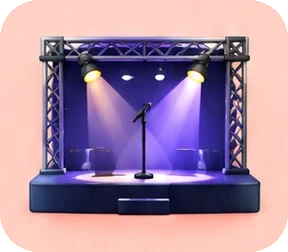
La Reserva protegida, la primera vez en locales, el Plan Sala y Pro. Cada cobro se enciende al llegar a un número, no en una fecha.
Después: el resto de España, Europa y, más adelante, Latinoamérica.
Fundador
Músico de bolos (rumba y bodas) en Barcelona. Producto, marca y marketing. Ha vivido el problema cada fin de semana.
Socio · Aether Labs
[Su papel en Musikeeo, en una línea]
Socio · Aether Labs
[Su papel en Musikeeo, en una línea]
Aether Labs es un estudio de software e IA de Barcelona. Ha construido Artiverse para Bonito Sound y Aura Studio, su propio estudio de contenido con IA.
de ingresos en el año 5 (escenario base, solo España), con 28 M€ contratados a través de la app.
de cada euro de ingresos queda después de cobros, garantía, atención y lo que cuesta conseguir a cada cliente.
desde el que ese margen paga una estructura de 25.000 € al mes. En el escenario prudente, 10.000 € al mes desde el mes 37.
Previsión a 60 meses con supuestos prudentes: un 60 % del volumen que planteábamos al principio, IVA, costes reales de cobro y la comisión solo cuando hay cliente nuevo. Son previsiones con sus supuestos a la vista, no una promesa.
| Contrataciones al mes | Al cierre de cada año: 150 · 550 · 1.600 · 3.400 · 5.700. Como referencia, GigPig hace unas 5.000 al mes en el Reino Unido. |
| Mezcla y caché | Bodas y particulares del 12 % al 30 % de los bolos, a 800 € · salas y eventos 15 %, a 1.000 € · bares, el resto, a 220 € |
| Bodas y particulares | Gestión y garantía del 12 % + IVA que paga el cliente (10 % los seis primeros meses). El músico cobra el 100 %. Pagadas por la app: 50 % → 65 % → 70 % |
| Bares y salas | 10 % + IVA solo la primera vez con cada artista (35 % de los bolos de bar, 50 % en salas). Repetir es gratis: así no se van por fuera. |
| Suscripciones | Plan Sala desde 29 €/mes (lo paga el 20 % de los locales) · Pro 7,99 €/mes (3 % de los perfiles activos) · Cancionero Pro 24,99 €/año · tiendas desde 49 €/mes · Destacado en bodas 29 €/mes. Con bajas del 3-4 % al mes. |
| Costes de cada cobro | Tarjeta 1,5 % + 0,25 €, Stripe Connect y disputas · fondo de garantía del 1 % y 5 € de atención por boda |
| Conseguir clientes | 50 € por pareja de boda, 90 € por bar nuevo, 80 € por sala o empresa y 3 € por perfil |
| Cuándo se cobra | Cada cobro se enciende al llegar a un número, no en una fecha. En la previsión: bodas desde el mes 7, salas el 7, bares el 8, Plan Sala el 12 y Pro el 13 |
Modelo por segmentos (docs/pitch/modelo_consejo.py). Las decisiones de cobro se contrastaron con 10 análisis expertos hechos con IA: finanzas, precios, legal e inversión. Se validan con el piloto de Barcelona.
| Año 1 | Año 2 | Año 3 | Año 4 | Año 5 | |
|---|---|---|---|---|---|
| Contrataciones | 675 | 3.898 | 12.332 | 29.565 | 54.575 |
| Volumen contratado | 0,27 M€ | 1,81 M€ | 6,30 M€ | 15,11 M€ | 27,89 M€ |
| Ingresos | 27 k€ | 117 k€ | 447 k€ | 1.060 k€ | 1.956 k€ |
| Comisión | 13 k€ | 83 k€ | 336 k€ | 805 k€ | 1.486 k€ |
| Suscripciones | 15 k€ | 28 k€ | 81 k€ | 178 k€ | 326 k€ |
| Visibilidad y Mercado | 0 k€ | 6 k€ | 30 k€ | 77 k€ | 144 k€ |
| − Cobros, garantía y atención | -1 k€ | -19 k€ | -89 k€ | -213 k€ | -393 k€ |
| − Conseguir clientes | -13 k€ | -62 k€ | -226 k€ | -507 k€ | -893 k€ |
| Margen de contribución | 13 k€ | 35 k€ | 133 k€ | 340 k€ | 669 k€ |
| Margen sobre ingresos | 47 % | 30 % | 30 % | 32 % | 34 % |
El año 1 es de siembra: lo que entra es la preventa de Pro Fundadores y los eventos de empresa. Desde el año 3, de cada euro quedan unos 30 céntimos, y 34 en el año 5, para pagar la estructura y ganar dinero.
Conservador: un tercio de los bolos del ambicioso. Base: el 60 %, solo España. Ambicioso: con Europa desde el año 4.
Ingresos, en millones de euros
| A1 | A2 | A3 | A4 | A5 | |
|---|---|---|---|---|---|
| Conservador | 0,02 | 0,07 | 0,26 | 0,61 | 1,13 |
| Base | 0,03 | 0,12 | 0,45 | 1,06 | 1,96 |
| Ambicioso | 0,03 | 0,19 | 0,72 | 1,72 | 3,21 |
Margen de contribución, año 5
| Margen | Sobre ingresos | |
|---|---|---|
| Conservador | 0,39 M€ | 34 % |
| Base | 0,67 M€ | 34 % |
| Ambicioso | 1,09 M€ | 34 % |
Margen de contribución, mes a mes
Desde qué mes cubre una estructura fija de…
| 10.000 €/mes | 25.000 €/mes | 50.000 €/mes | |
|---|---|---|---|
| Conservador | mes 37 | mes 49 | después del año 5 |
| Base | mes 30 | mes 41 | mes 53 |
| Ambicioso | mes 25 | mes 36 | mes 45 |
La app ya está hecha y funcionando: lo fijo es el equipo que la lleva y los servidores. Cuánto se gasta en estructura lo decide quien la lleve; aquí se ve desde cuándo se paga sola.
Caché de 800 €: el cliente paga 96 € + IVA de gestión y garantía.
66 €
quedan tras el cobro, la garantía y la atención. Conseguir a la pareja no puede costar más de 50 €.
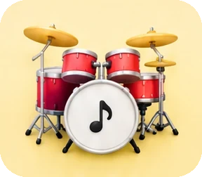
Caché de 220 €: el bar paga 22 € + IVA al aceptar la propuesta.
21 €
Repetir con ese artista es gratis: el bar paga después el Plan Sala, desde 29 € al mes.
Caché de 1.000 €: 100 € + IVA la primera vez con ese artista.
98 €
quedan, frente a unos 80 € que cuesta conseguir una sala o empresa nueva.
La boda paga lo que cuesta conseguirla; el margen lo dan los locales (la primera vez y el Plan Sala), las tiendas y la visibilidad. Al 10 %, una boda deja 50 €: por eso ese precio es solo de lanzamiento, y mientras dure no se pagan anuncios para conseguir parejas.
| Si cambia… | Ingresos año 3 | Ingresos año 5 | Margen año 5 | Cubre 25.000 €/mes | Cubre 50.000 €/mes |
|---|---|---|---|---|---|
| Base (pareja a 50 €) | 0,45 M€ | 1,96 M€ | 669 k€ | mes 41 | mes 53 |
| Conseguir unos novios cuesta 30 € | 0,45 M€ | 1,96 M€ | 898 k€ | mes 37 | mes 48 |
| Conseguir unos novios cuesta 70 € | 0,45 M€ | 1,96 M€ | 440 k€ | mes 49 | después del año 5 |
| Bodas al 10 % y no al 12 % | 0,41 M€ | 1,78 M€ | 498 k€ | mes 47 | después del año 5 |
| Plan Sala lo paga el 12 %, no el 20 % | 0,43 M€ | 1,89 M€ | 602 k€ | mes 43 | mes 55 |
| Bodas pagadas por la app: 55 % como mucho | 0,39 M€ | 1,72 M€ | 511 k€ | mes 46 | después del año 5 |
| Un 30 % menos de contrataciones | 0,32 M€ | 1,40 M€ | 501 k€ | mes 46 | después del año 5 |
Un cambio cada vez, con todo lo demás igual. Lo que más pesa es lo que cuesta conseguir unos novios: por eso llegan a través de fincas, wedding planners y los propios músicos, y el coste se mide en Barcelona antes de pagar anuncios.
Objetivo: 50 € o menos. A 30 €, el margen del año 5 sube a 898 k€; a 70 €, baja a 440 k€.
Objetivo: 60 % o más a los 12 meses. Con un 55 % como mucho, el margen queda en 511 k€. Si no llega al 40 %, plan B: «Destacado en bodas».
Objetivo: 20 % de los locales activos. Si solo lo paga el 12 %, el margen del año 5 queda en 602 k€.
Con todo lo dudoso moviéndose a la vez (bolos, coste por pareja, cobro por la app, Plan Sala…), el año 5 deja:
| Peor 10 % | Normal | Mejor 10 % | |
|---|---|---|---|
| Ingresos | 1,11 M€ | 1,88 M€ | 3,22 M€ |
| Margen | 161 k€ | 518 k€ | 1.044 k€ |
de esos futuros pierden dinero en el año 5. No damos una cifra de valoración: enseñamos de dónde sale el margen y cómo lo medimos desde el primer mes.
El teléfono no se ve hasta aceptar la propuesta, como en Airbnb. Repetir con el mismo artista es gratis, así que no hay motivo para irse. Y dentro hay garantía y factura.
Es lo que más pesa. Las bodas llegan por fincas, planners y los propios músicos; el coste se mide en Barcelona antes de pagar anuncios.
Empezar por los músicos, con el Cancionero, que usan cada semana, y por los bares de un barrio antes de abrir la ciudad.
Antes del primer euro: sociedad, asesor laboral y fiscal, Stripe Connect y el alta como plataforma en Hacienda (DAC7). El Plan Sala incluirá las altas de los músicos con una gestoría.
Bares, salas y empresas son el 70 % de las contrataciones previstas y se reparten todo el año.
GigPig o Encore hacen una parte en otro país. Musikeeo junta todo el directo, en español y con la red de músicos de aquí.
Funciona en musikeeo.com: lo caro de un producto así ya está pagado. Lo que queda es darla a conocer.
Un 12 % de gestión y garantía en bodas, que paga el cliente, y un 10 % la primera vez que un local contrata a un artista. Repetir es gratis.
En el año 5 (base): comisión 76 %, suscripciones 17 % y visibilidad y Mercado 7 %.
Solo la música de las bodas mueve unos 160 M€ al año en España, y nadie junta artistas, técnicos, salas y equipo en una app.
musikeeo.com · Víctor Torres · Aether Labs
La demo de 52 s y la de 17 s enseñan la app tal cual está hoy.